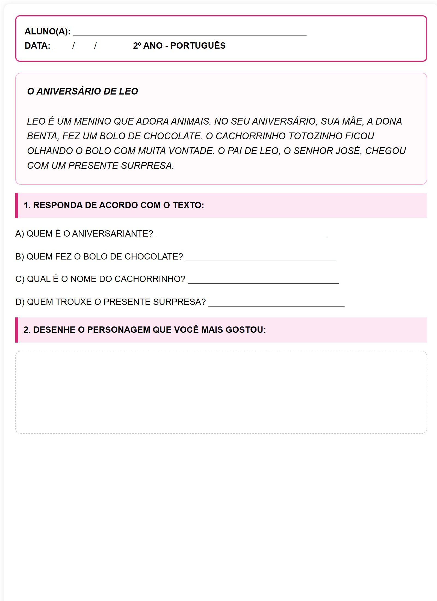

O ANIVERSÁRIO DE LEO
LEO É UM MENINO QUE ADORA ANIMAIS. NO SEU ANIVERSÁRIO, SUA MÃE, A DONA BENTA, FEZ UM BOLO DE CHOCOLATE. O CACHORRINHO TOTOZINHO FICOU OLHANDO O BOLO COM MUITA VONTADE. O PAI DE LEO, O SENHOR JOSÉ, CHEGOU COM UM PRESENTE SURPRESA.
1. RESPONDA DE ACORDO COM O TEXTO:
A) QUEM É O ANIVERSARIANTE? ___________________________________
B) QUEM FEZ O BOLO DE CHOCOLATE? _______________________________
C) QUAL É O NOME DO CACHORRINHO? _______________________________
D) QUEM TROUXE O PRESENTE SURPRESA? ____________________________
2. DESENHE O PERSONAGEM QUE VOCÊ MAIS GOSTOU:
Visualização da Folha de Atividade
